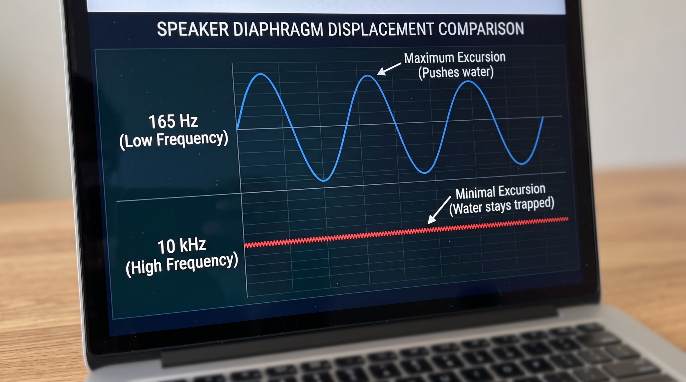

It happens to the best of us: you accidentally drop your smartphone into the sink, a puddle, or the toilet. You panic, snatch it out of the water, and vigorously wipe down the screen. Thanks to modern IP68 water resistance, your device powers on and seems perfectly fine. But a few minutes later, you try to play a song or listen to a voice memo, and the audio sounds incredibly muffled, distorted, and unrecognizably quiet.
While the internal motherboard might be safe from liquid damage, the external speaker grilles on modern smartphones are highly susceptible to trapping water. In this comprehensive guide, we will explore exactly why water gets stuck in your phone, why popular internet myths can permanently destroy your device, and how you can use specific acoustic frequencies to safely eject water from your speakers.
Why Does Water Get Trapped in the Speaker?
To understand the solution, we must first understand the physics of the problem. Your smartphone’s speaker relies on a small diaphragm pushing air through a protective mesh grille. These grilles feature microscopic holes designed to allow air pressure (sound) to escape while preventing dust from entering.
When liquid breaches this cavity, it creates a tight seal across the microscopic holes. This phenomenon is caused by surface tension. The water acts like a physical wall, preventing the speaker's diaphragm from moving air efficiently. Instead of producing crisp audio, the speaker wastes its energy vibrating the trapped water, resulting in that dreaded "muffled" sound.
The Myth of Uncooked Rice: Stop Doing This
If you search the internet for "how to fix a water-damaged phone," the most common advice is to bury the device in a bowl of uncooked rice for 24 hours. As audio technicians, we strongly advise against this method.
- Starch and Dust: Uncooked rice is covered in fine starch powder and dust. When you bury a wet phone in rice, this paste-like dust gets forced deep into the charging port and speaker grilles.
- Inefficient Drying: Scientific tests have proven that rice is a terrible desiccant. Leaving your phone out in the open air with a gentle breeze actually dries the internal components faster than burying it in rice.
- Micro-scratches: The hard grains of rice can easily scratch the oleophobic coating on your smartphone's display.

The Science of Acoustic Water Ejection
If rice is out of the question, what is the safest way to clear the speaker? The answer lies in acoustic engineering. Brands like Apple (in the Apple Watch) and Samsung have utilized a method called Acoustic Water Ejection for years.
Sound engineers have identified that low-frequency sine waves are the absolute best tool for physically moving water. When you play a specific low-frequency tone at maximum volume, it forces the speaker's internal diaphragm to achieve maximum physical displacement. In simple terms: the speaker acts like a miniature trampoline, violently kicking back and forth.
Why the 165Hz Frequency is the "Sweet Spot"
Not all sounds can push water. If you play a high-pitched tone (like 10,000Hz), the speaker vibrates too quickly and with too little force to break the surface tension of the water. Conversely, if you play a frequency that is too low (like 20Hz), your smartphone speaker simply isn't large enough to reproduce the sound.
Through extensive testing, audio engineers have found that the 165Hz frequency is the optimal "sweet spot" for mobile devices. At 165Hz, the smartphone speaker moves slow enough to build up kinetic energy, but fast enough to forcefully break the capillary action holding the water droplets inside the mesh. The sheer acoustic pressure literally pushes the liquid out of the grille.
How to Safely Eject Water: Step-by-Step
If your phone speaker sounds muffled after taking a plunge, follow these exact steps to restore your audio quality without causing hardware fatigue:
- Wipe the Exterior: Use a microfiber cloth to dry the entire exterior of the phone. Never use a hairdryer, as the heat can melt the waterproof adhesives holding your phone together.
- Disconnect Accessories: Ensure no Bluetooth headphones or wired earphones are connected. The sound must play out of the phone's primary loudspeakers.
- Maximize the Volume: Turn your smartphone's media volume up to 100%. The acoustic ejection method requires maximum kinetic energy to work.
- Play the 165Hz Tone: Use an online speaker cleaner tool to generate a continuous 165Hz sine wave. Place the phone with the speakers facing downward on a dry cloth.
- Wait 30 Seconds: Allow the tone to play for roughly 30 to 45 seconds. You will likely see tiny droplets of water being ejected onto the cloth.
FAQ: Does this work for saltwater or sugary drinks?
Acoustic ejection relies on physical force. While it will eject the liquid, saltwater, coffee, and sugary drinks leave behind a sticky, corrosive residue once the water evaporates. If you drop your phone in anything other than fresh water, you should rinse it gently in clean tap water before using the speaker cleaner method to prevent permanent corrosion.


Leave A Reply